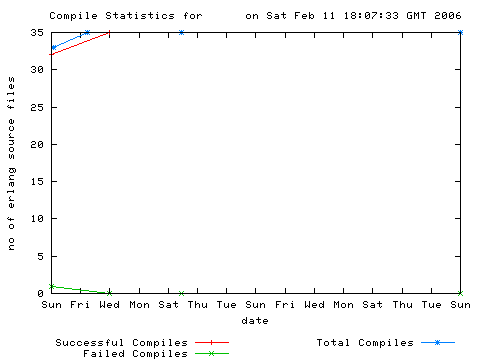
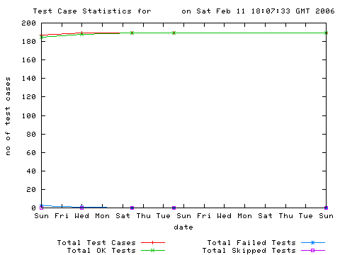
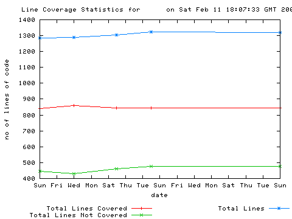
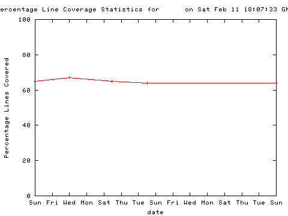
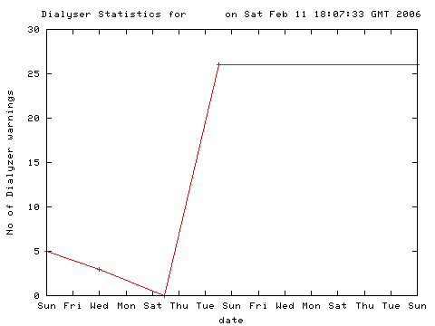

Erlang Automated Build Statistics
Compile Statistics

Test Cases

Line Coverage

Percentage Line Coverage

Dialyzer

Tsunami Load Results
These can be found here
Colophon
This page has been generated by the script
erlang_automated_build which
is available under the GPL from the jungerl
erlang_automated_build uses the following:
The graphs on this page were generated by gnuplot